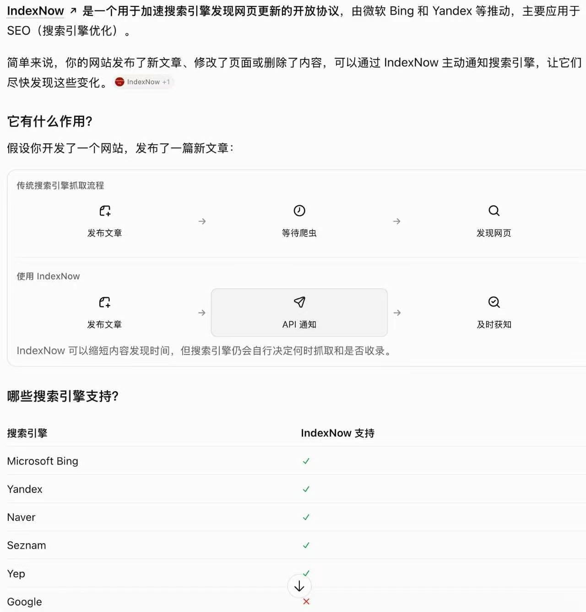

这段群聊记录的核心，是一个尚未完全确认的发现：新站想要拿到 ChatGPT 来的流量，除了主动跟 GPT 聊自己的网站、让它访问之外，再主动通过 IndexNow 提交网站，也可能加快拿到这部分流量。分享者建议新站上线后两个动作都做，并说明这个发现是让 Claude 读了国庆期间做的几个新站数据之后得出的，他自己没有完全确认，需要群友一起验证。
IndexNow 提交与 AI 搜索摘要
群友补充了两个用法：IndexNow 可以直接让 AI 提交；也可以直接让 GPT 讲出它的 AI 搜索摘要，再按这份摘要去优化页面。
群里有人追问 IndexNow 是什么，随后有人贴出介绍截图（见下）。分享者的态度是：不用搞懂它是什么，让你的 AI 帮你做到网站里就行。

外链值不值得买：三步快速判断
同一位分享者还给出了判断一个网站的外链是否值得买的快速方法，依次检查流量结构、关键词结构和收录情况。
- 打开 AITDK 看这个网站的流量数据，来自搜索的流量占比高不高；占比很低就要小心。
- 再看这些搜索流量的关键词是品牌词还是有需求词；如果只有品牌词也不要买，说明这个站拿不到别的词的搜索排名。
- 用谷歌 site 查一下域名，先看 24 小时内的收录，没有新页面收录再看七天的；都没有，说明近期没有谷歌爬虫来过、或者来了也不收录页面，这个站就不值得买。
这条发现的使用边界
- 证据来自 Claude 对几个国庆新站数据的观察，分享者明确说没有完全确认，属于待验证的相关性，还不能当作因果结论。
- 截图本身也说明，IndexNow 只缩短内容的发现时间，搜索引擎仍会自行决定何时抓取、是否收录。
- 可执行的做法是：新站上线后主动对话与 IndexNow 提交两个动作都做，再把两组站点的数据记录下来对比。
原始对话
原始对话按时间顺序完整保留，共 9 条；其中的图片已本地化，并插在上文对应位置。
聊天记录（9 条）
参与者 5 人：哥飞、二维世界是个圆、superceo、Stu(dy ing)、Skyyyy · 时间范围 2026年11月6日 10:41 至 2026年11月6日 11:00 · 原始 9 条，保留 9 条